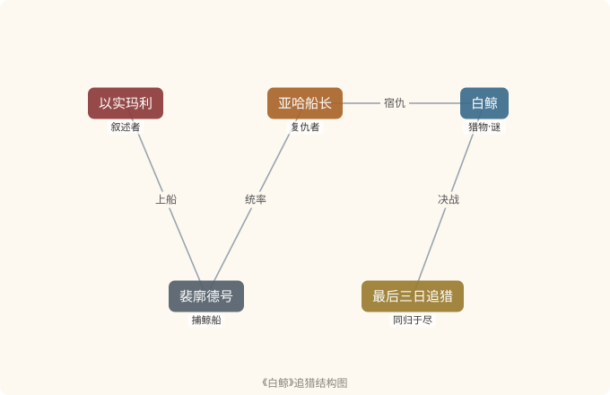

白鲸
一、基本信息
| 作者 | 赫尔曼·梅尔维尔 |
|---|---|
| 成书/出版 | 1851年出版（Britannica：Moby Dick (1851)） Herman Melville — Encyclopaedia Britannica（百科全书） |
| 国别/地区 | 美国 |
| 时代 | 近代 · 19世纪 |
| 体裁 | 长篇小说 |
| 语言 | 英语 |

《白鲸》追猎结构图（人物关系图）
二、创作背景
Britannica：'best known for his novels of the sea, including his masterpiece, Moby Dick (1851)'——海洋小说的杰作。
素材来源：作者1841年乘捕鲸船阿库什奈号的南太平洋航行（Britannica：Acushnet sailing January 1841）。
三、内容脉络
以实玛利随裴廓德号出航——亚哈船长追猎咬断他一条腿的白鲸莫比·迪克（通说）。
全书编织捕鲸业百科（鲸类学章）与三大预言者、圣火夜、最后三日的追猎（通说）。
结局：白鲸撞沉裴廓德号，亚哈被鱼线缠住拖入海中；以实玛利靠棺材浮桶生还（通说待核）。
四、主要人物表
| 人物 | 身份 | 说明 |
|---|---|---|
| 亚哈船长 | 捕鲸船长 | 复仇的偏执狂（通说） |
| 以实玛利 | 水手·叙述者 | 唯一生还者 |
| 莫比·迪克 | 白鲸 | 自然的谜题（通说） |
| 魁魁格 | 标枪手 | 食人岛王子（通说） |
五、主题与艺术特点
- 复仇与执念的毁灭性（通说）。
- 自然的不可知：白鲸的白色之谜（通说）。
- 民主的船：多元族裔水手的浮世（通说待核）。
六、影响与评论
- Britannica：20世纪初其作品声誉飙升，'eventually considered to be one of the great American writers'。
Herman Melville — Encyclopaedia Britannica（百科全书） - Britannica：《白鲸》为其杰作（masterpiece）。
Herman Melville — Encyclopaedia Britannica（百科全书）
七、阅读建议
难点
- 鲸类学百科章——可跳读再回补。
- 圣经/莎士比亚典故密度。
- 曹庸译本（长江文艺出版社，通说待核）。
- 成时译本（人民文学出版社，通说待核）。
- 英文原版（公有领域）。
先读第1、36、42章（戏白鲸出现）与最后三章 → 补百科章。
八、待核实
- 英国版1851年10月《The Whale》与美国版11月《Moby-Dick》差异待核。
- 题献霍桑细节待核。
- 《水手比利·巴德》遗稿待核。
本页主要来源
相关作品：哈克贝利·费恩历险记红字愤怒的葡萄
赫尔曼·梅尔维尔的其他收录作品：白鲸